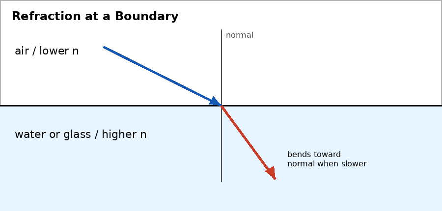

Unit 6 DOK 2.3 Bending Toward or Away from the Normal V1
Name:
Version 1
Show work and mark answers clearly.

Light travels from air into water at an angle.
- State whether it bends toward or away from the normal.
- Explain using speed change.
Unit 6 DOK 2.3 Bending Toward or Away from the Normal V2
Name:
Version 2
Show work and mark answers clearly.
Light travels from water into air at an angle.
- State whether it bends toward or away from the normal.
- Explain why this is different from air to water.
Unit 6 DOK 2.3 Bending Toward or Away from the Normal V3
Name:
Version 3
Show work and mark answers clearly.
Light enters glass from air and slows down.
- Predict the bending direction.
- Draw or describe the refracted ray compared with the normal.
Unit 6 DOK 2.3 Bending Toward or Away from the Normal V4
Name:
Version 4
Show work and mark answers clearly.
Light leaves glass and enters air.
- Predict the bending direction.
- Explain why total internal reflection might occur if the angle is large enough.
Unit 6 DOK 2.3 Bending Toward or Away from the Normal V5
Name:
Version 5
Show work and mark answers clearly.
A ray travels straight along the normal into a slower medium.
- Describe whether the ray bends left or right.
- Explain why changing speed does not always mean changing direction.
Unit 6 DOK 2.3 Bending Toward or Away from the Normal V6
Name:
Version 6
Show work and mark answers clearly.
A student draws a ray bending away from the normal when entering a slower medium.
- Critique the diagram.
- Correct the bending direction and explain.